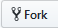
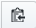
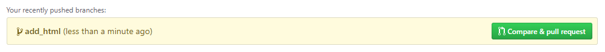
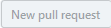
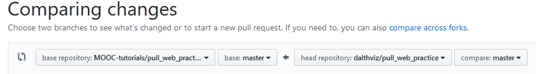

En este proyecto vamos a practicar la contribución a un repositorio que contiene un sitio web estático. La tarea consiste en realizar una contribución a un repositorio y más puntualmente realizar una petición de validación (pull request) para agregar una página. El sitio web estático es un conjunto de páginas HTML, y es un proyecto público abierto a contribuciones de cualquier persona.
El código se encuentra disponible en Github y a continuación se explica brevemente la configuración del ambiente de desarrollo necesaria para comenzar a trabajar. Posteriormente se explica la dinámica de trabajo sobre el repositorio y lo que se espera realizar en conjunto con el equipo automático.
Antes de comenzar
- Asegúrese de tener una cuenta en Github y tener la sesión iniciada.
- Asegurese de tener Git instalado.
- Se recomienda usar algún editor de archivos con manejo de sintaxis. Una opción recomendada es usar Visual Studio Code.
Primeros pasos
- Ir a https://github.com/MOOC-tutorials/pull_web_practice
- Dar clic sobre el botón de 
- Confirmar que ahora tenga dentro de su cuenta un nuevo repositorio con el sitio web estático base con el nombre pull_web_practice
Clonando el repositorio
- En su repositorio pull_web_practice en Github, hacer clic en

- Copiar la URL dada. Puede usar el botón (este botón copiará en su portapapeles la URL que se necesita).
- En su terminal/consola ubicarse en el directorio en que desea que se clone el repositorio usando el comando
cd. - En su terminal/consola escribir
git clone <URL del repositorio>. - Cambiar el directorio activo (
cd) a la carpeta raíz del repositorio. Ejecutandocd pull_web_practicedebería bastar.
En este momento debería de contar con una copia local del repositorio con el código de la página web estática. Partiendo de esto ahora podrá hacer los cambios necesarios para realizar una contribución al proyecto. La idea general es crear una nueva página HTML que cuente con unas características mínimas para poder ser aceptable. Al realizar las modificaciones es necesario hacer un commit de las mismas, además de subir los cambios locales mediante un push al repositorio remoto.
Instrucciones sobre la contribución
Como se mencionó, la contribución a realizar es añadir una página HTML. A continuación se muestra una base de página con los elementos mínimos que la misma necesita para ser aceptada:
<!DOCTYPE HTML PUBLIC "-//W3C//DTD HTML 3.2//EN">
<HTML>
<HEAD>
<META HTTP-EQUIV="CONTENT-TYPE" CONTENT="text/html; charset=UTF-8">
<TITLE>Mi primera página</TITLE>
<META NAME="GENERATOR" CONTENT="OpenOffice.org 1.0 (Win32)">
<META NAME="AUTHOR" CONTENT="">
<META NAME="CREATED" CONTENT="">
<META NAME="CHANGEDBY" CONTENT="">
<META NAME="CHANGED" CONTENT="">
<link rel="stylesheet" href="https://stackpath.bootstrapcdn.com/bootstrap/4.3.1/css/bootstrap.min.css" integrity="sha384-ggOyR0iXCbMQv3Xipma34MD+dH/1fQ784/j6cY/iJTQUOhcWr7x9JvoRxT2MZw1T" crossorigin="anonymous">
</HEAD>
<BODY LANG="es-ES" class="container text-center">
<H1>
<IMG ID="imagen5" SRC="../imagenes/BD1.gif" NAME="Imagen1" ALIGN=CENTER WIDTH=700 HEIGHT=50><BR CLEAR=LEFT><BR><BR>
</H1>
<!--
<H1 ID="titulo5">Mi primera página HTML</H1>
<P>
<BR><BR>
</P>
-->
<div class="row text-center">
<div class="col-md-6">
<span>←</span><A HREF="pagina4.html">Mi cuarta página HTML</A>
</div>
<div class="col-md-6">
<A ID="enlace5" HREF="pagina2.html">Mi segunda página HTML</A><span>→</span>
</div>
</div>
<P></P>
</BODY>
</HTML>
Conociendo las características necesarias para una contribución
Partiendo del ejemplo anterior, agregue una nueva página que siga una estructura similar, realice commit y push de sus cambios, y realice una petición de validación de cambios (pull request) al repositorio original en https://github.com/MOOC-tutorials/pull_web_practice . Cabe aclarar que la estructura base no es del todo correcta, pero igualmente se pide realizar la contribución inicialmente con la misma para observar la retroalimentación y los requerimientos mínimos que la contribución debe seguir para ser considerada correcta.
Por ejemplo, al realizar cambios en su fork podrá ver un mensaje como el siguiente que le ayudará a crear la petición (dependiendo de si se hace uso de una rama):

O mediante el botón: 
Realizando una selección con base y head similar al siguiente:

NOTA: Tenga en cuenta que esta contribución inicial se realiza para conocer qué elementos son necesarios para su aceptación. De esta manera, la contribución que se sugiere realizar no será aceptada de inmediato y por el contrario se le informará las condiciones en las que podría ser aceptada (más detalles en la Parte 2).
En este momento debe contar con la retroalimentación realizada por el equipo automático acerca de la validez de su contribución. Como se mencionó anteriormente, en caso de que su contribución haya sido rechazada, la causa del rechazo estará dada porque incumple con alguna de las siguientes condiciones:
- Únicamente se aceptan archivos con las extensiones .html, .png y .jpg
- La única operación aceptada sobre archivos es agregar nuevos archivos (added).
- En el caso de archivos con extensión .html deben contar dentro de su estructura con los siguientes elementos mínimos y propiedades:
Elemento | Caracteristicas |
Elemento 1 |
|
Elemento 2 |
|
Elemento 3 |
|
Al ser rechazada su petición de validación, el equipo automático dejará un comentario indicando el archivo que está causando el rechazo y la causa del mismo. Partiendo de esto, es posible realizar las correcciones pertinentes, realizar commit y push a su fork desde su repositorio local para actualizar la petición de validación (pull request), y de esta forma esperar una nueva revisión y posible aprobación por parte del equipo automático.